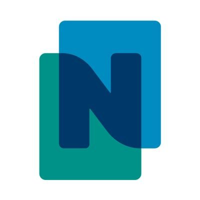
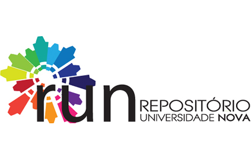
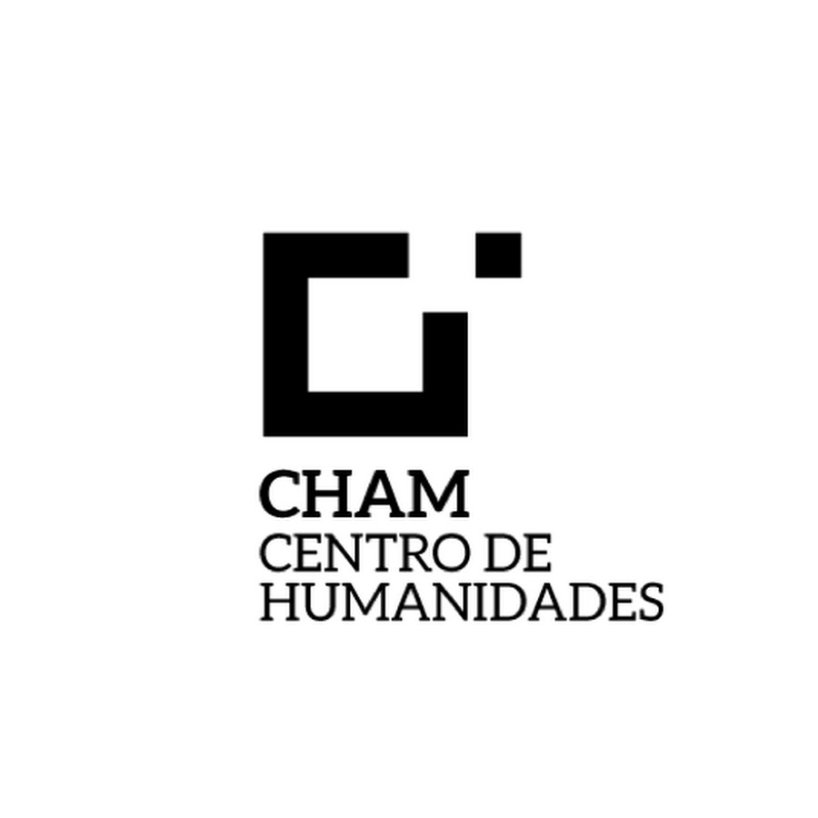
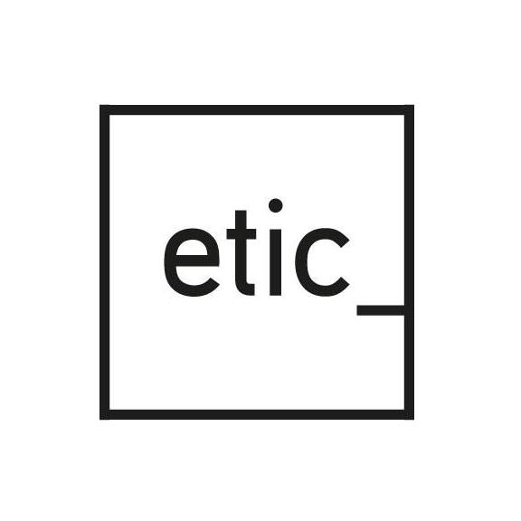
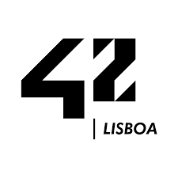

Formação Académica
-

Mestrado em História, 2019, 18/20
-Especialidade em História Moderna e dos Descobrimentos, FSCH, UNL -

Dissertação de Mestrado 19/20
-Um Livro Fantasma "Christiani Pueri Institutio Adolescentiaeque Perfugium" de Macau, 1588 -

Comunicação Cinetífica, Junho 2019
-"Um Livro Fantasma Christiani Pueri Institutio, Macau 1588" em Colóquio Jovens Investigadores de História Moderna, CHAM
Cursos Profissionais
-

OutSystems Web Reactive Guided Path, Março 2021
-OutSystems é uma plataforma de baixo código que fornece as ferramentas para as empresas desenvolverem, implantarem e gerenciarem aplicativos empresariais omnicanal. -
HTML, CSS, JavaScript by Johns Hopkins University, Fevereiro 2021
-Curso via Coursera de 5 semanas, que ensina as bases de Web Design desde HTML, CSS ao JavaScript. Foi graças a este curso que se fez este website. -

Produção e Criação Musical: Hip Hop, Outubro, 2021
-Curso da Etic que contempla todas as dimensões de um projecto de Hip Hop em Portugal; desde a produção musical, ao marketing e à gestão dos direitos de autor, mas também à própria História do Hip Hop. Aulas leccionadas por: Nerve, Benji Price, MadKutz, Harold, TNT... -

Piscine - 42 Lisboa Novembro, 2020
-Piscine é um período de aprendizagem intenso, com duração de 4 semanas, sendo a fase fulcral do processo de seleção da 42 Lisboa. Sobre pressão, os candidatos aprendem segundo o método "peer-to-peer"; testando as suas capacidades de resolução de problemas e de trabalho de equipa.